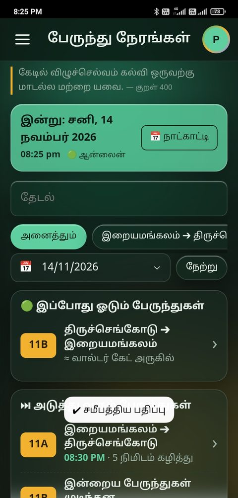
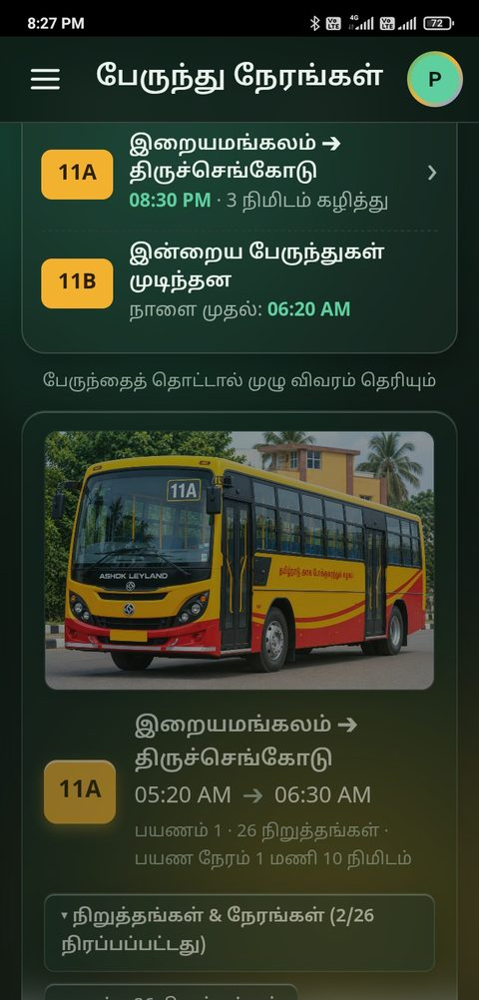
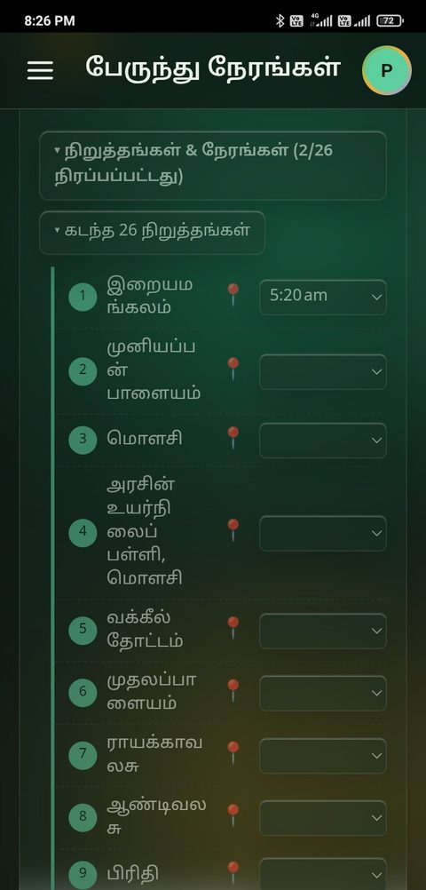
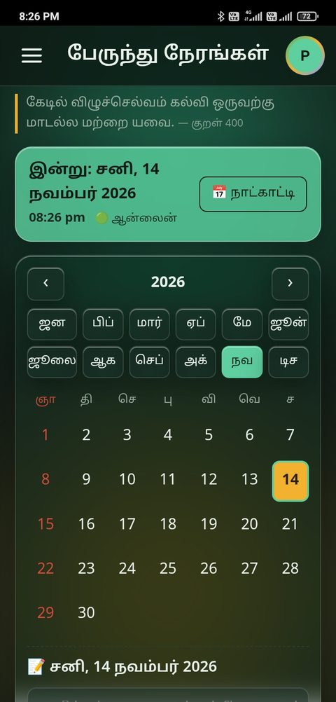
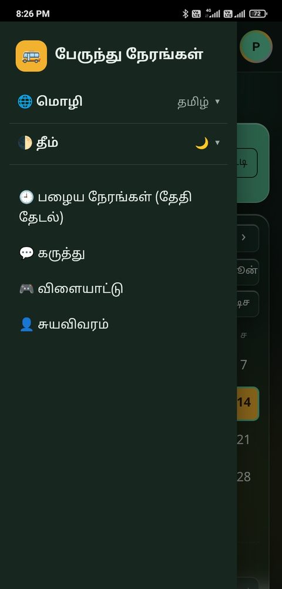
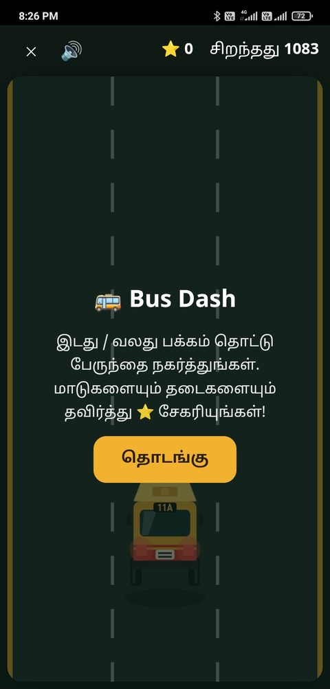

பேருந்து நேரங்கள் என்பது Android-க்கான இலவச ஆப். பஸ் நேரம், ஓடும் நிலை, அடுத்த நிறுத்தங்களின் நேரம் – எல்லாம் ஒரே இடத்தில்.
பதிவிறக்கம் 100%-ல் நின்றால், வேறு உலாவியில் (Chrome) முயற்சி செய்யுங்கள்.






பஸ்ஸுக்காகக் காத்திருப்பவர்களுக்காக உருவாக்கப்பட்டது.
ஒவ்வொரு நிறுத்தத்தின் வருகை, புறப்பாடு நேரம்.
பஸ் இப்போது எங்கே உள்ளது என்று பாருங்கள்.
ஒரு நிறுத்தத்தில் நேரம் மாற்றினால் அடுத்த நிறுத்தங்களும் மாறும்.
ஆப்பை நண்பர்களுக்கு ஒரே தொடுதலில் அனுப்புங்கள்.
பதிவு தேவையில்லை. நிறுவி உடனே பயன்படுத்தலாம்.
பெரிய எழுத்து, எளிய திரை, வேகமாகத் திறக்கும்.
மேலே உள்ள “APK பதிவிறக்கு” பட்டனை அழுத்துங்கள்.
பதிவிறக்கம் முடிந்ததும் அறிவிப்பில் அல்லது Downloads-ல் கோப்பைத் தொடுங்கள்.
“இந்த மூலத்திலிருந்து நிறுவ அனுமதி” என்று கேட்டால் அனுமதியுங்கள்.
நிறுவல் முடிந்ததும் ஆப்பைத் திறந்து பயன்படுத்துங்கள்.